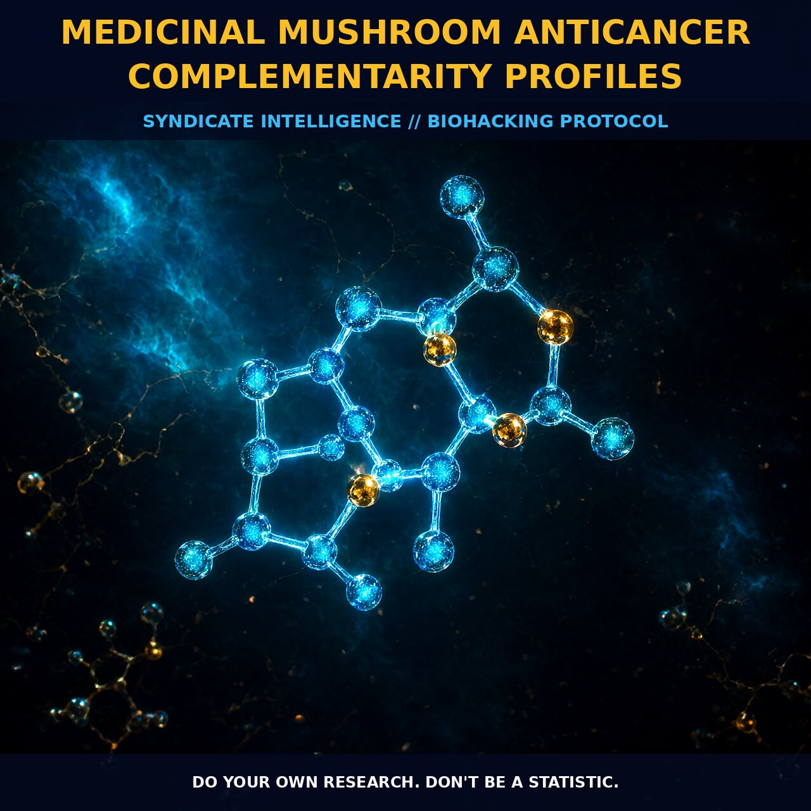

Modulating Antigenotoxic Pathways via Medicinal Mushroom Polysaccharides

1. The Mechanism of Action
Medicinal mushrooms function not merely as nutrient substrates but as complex biological signaling systems. Their primary mechanism relies on a class of polysaccharides, predominantly beta-glucans, which actively modulate immune health and cellular defense architectures. These bioactive compounds are converted into sustainable pharmaceutical forms that engage the body’s antigenotoxic pathways and inflammatory responses with precision.
The efficacy of these extracts is driven by specific molecular entities such as polysaccharide-K (krestin), a primary agent in anti-tumor effects and patient survival outcomes. Species like Trametes versicolor (Turkey Tail) demonstrate potent immune-activating properties through their mycelium and fermented substrate. This mechanical action extends beyond peripheral activity, engaging deep transcriptional regulation via nuclear factor-kB, the critical controller of gene expression related to cell survival and proliferation.
2. Systemic Anticancer Profiling
The structural integrity of these fungi provides a broad-spectrum anticancer profile that transcends single-target inhibition, offering systemic immunomodulation. Research highlights lentinans, found in Shiitake (Lentinus edodes), which have been linked to improved efficacy in lung cancer treatment and decreased nephrotoxicity when administered alongside conventional drug therapies.
These anti-tumor effects are further reinforced by the ability of fungal extracts to promote survival-prolonging outcomes in gastric, breast, and colorectal cancers. By acting as chemo-preventative agents, they balance advantageous immune activation with potentially harmful inflammatory overreactions. This dual nature positions them as a stabilizing force during conventional medical interventions, effectively reducing the collateral damage associated with aggressive cancer treatments.
3. Biological Leverage and Metabolic Health
The strategic value of medicinal mushrooms lies in their capacity to optimize immunological parameters while simultaneously mitigating glycemic fluctuations and supporting metabolic homeostasis. Species such as Agaricus sylvaticus have been shown to improve immunological markers and reduce glycemia, offering a synergistic benefit for patients managing both immune resilience and metabolic stress.
This leverage is amplified by the antimicrobial properties inherent in varieties like Fusharium oxysporum and Agaricus visporus. These organisms create a hostile environment for pathogenic proliferation while supporting healthy cellular differentiation, thereby regulating inflammatory responses and controlling tumor growth dynamics. The systemic impact suggests that consistent mushroom intake can lower cancer incidence through sustained modulation rather than acute intervention alone.
4. Tactical Implementation Protocol
For optimal clinical integration, focus on standardized extracts where specific bioactive compounds like polysaccharide-K are quantified to ensure consistent immune signaling. Selection of species such as Turkey Tail or Shiitake provides a reliable source of beta-glucans and lentinans with demonstrated therapeutic effects in human studies. Dosing strategies must consider the synergy between mycelial and substrate components, both of which exhibit potent immune-activating properties in vitro.
Practitioners should prioritize products derived from clean growing environments to minimize heavy metal contamination risks, particularly lead and cadmium found in certain regional harvests. Consistency is paramount; daily intake maintains the sustained modulation of inflammatory and immune pathways necessary for chemo-preventative benefits. While mild side effects such as itching or dizziness may occur, the overall toxicity profile remains highly favorable compared to synthetic chemotherapies, making them suitable for extended use alongside conventional therapies.
Prostar Life Hack
Prostar Life Hack: Prioritize standardized extracts rich in Polysaccharide-K and Lentinans. Ensure your source is low-contaminant (minimizing lead/cadmium) and consistently dosed to support nuclear factor-kB regulation and glycemic stability without introducing metabolic burden.
[ AUTHOR: LEAD TECHNICAL RESEARCHER ]
[FRESH ON CHAIN: 2b3b2e96d28c5ab6... ]